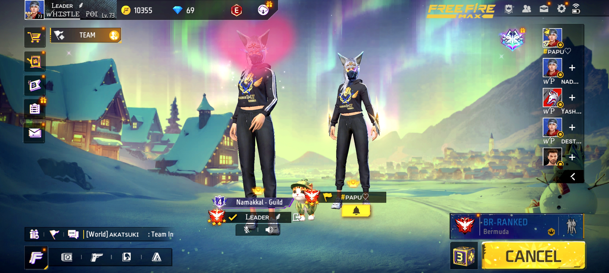
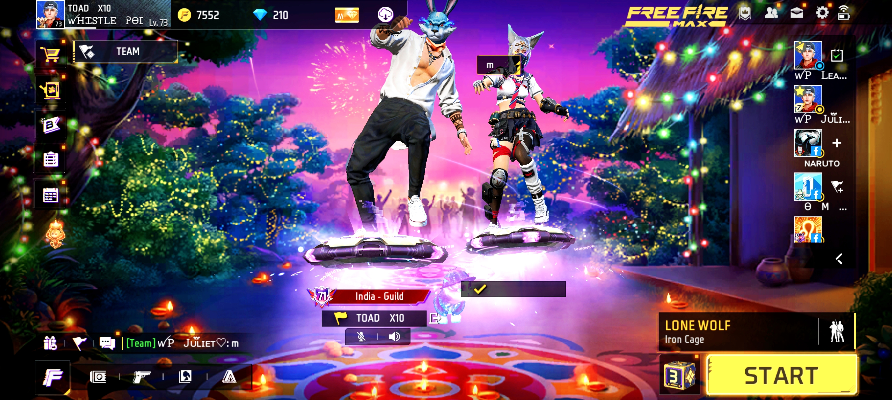
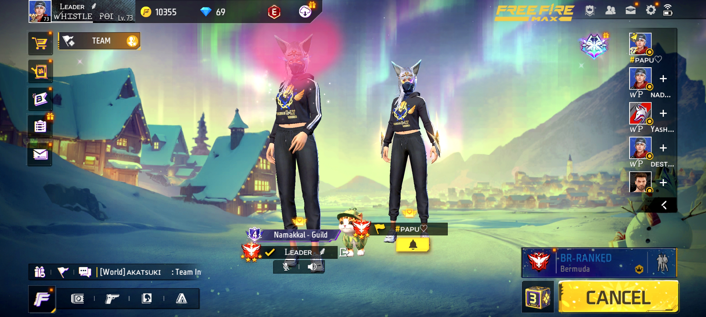
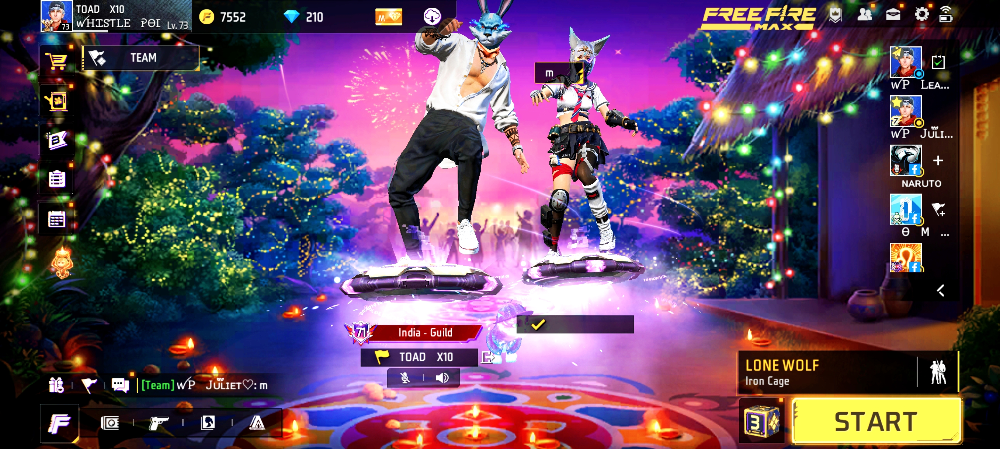
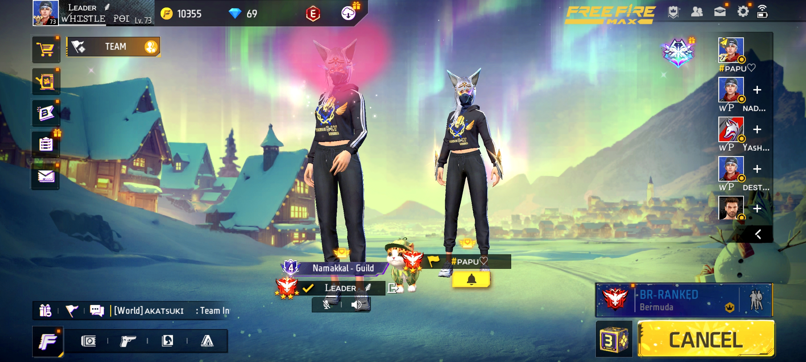
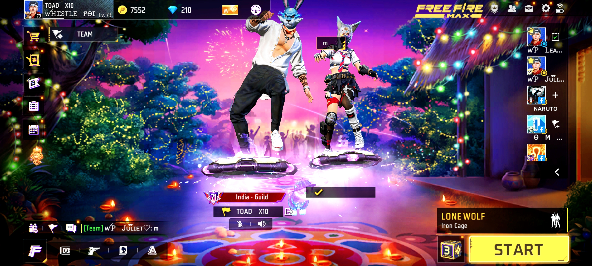
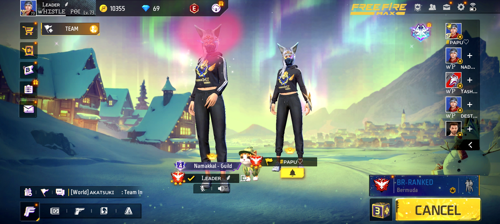
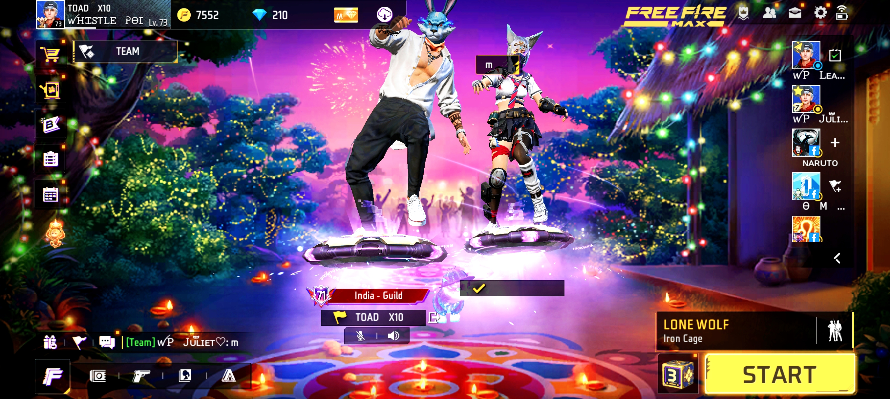

HI JULI THIS WEBSITE MAKES FOR YOU BY YOUR CHLM VARUN 😁
THIS MUSIC I AM DEDICATED FOR YOU DA THANGOOO..😘
NAMMA MEMORIES FOREVER 💙


 



 



Hi juli eppadi irukka , ooruku ponadum enna maranduta paravala , but enakku unna romba romba pudikkum theriyumaa , because you are my baby and my favorate person , na unakku pudikkada maari neriya panren adukkelam sorry but adhellem en panrene enakke theriyala aana , enakku un kooda mattum tha happy ya feel aagudu , en life la vandadukku thanks thangooo , aprom naanuum un kozhanda tha so ennayum apo apo konjom care pannuda
caring na dailyum text panradu fast aah reply pannanum nu solala ,
ennoda hope ee neethana unna happy ya vechikkanum nu thana na efforts podureN,
inda varun ennaikkum unna ematha maaten juli ,
nee en usuru da, na edu senjalum 1 ku 1000 times yotchi tha seiven edu risk tha but ennala mudiyum ,
na small target vaikala en target perusu ,na chinna payyan tha aana maturity and iq level pathi unakke theriyum papa,
unakku propse panna yotcha enakku unna eppadi en life la kondu varanum nu theriyada ena ,
just en mela kuda vena namma realitionship mela hope vai da na paathukiren ,
nee edukkum bayapadada neeyum thappu pannala naanum thappu pannala juli,
epdi onnu nadanda life super aah irukkum nu namnma yotchi irukkom ,
kadavul edula neriya twist kudupparu namma tha juli handle pannanum ,
future la un parents set agadu nu sonnangana sandhosama poiduven adukkana thagudi enakku illainu pain ee irukkadu juli,
but neeye sollum pothu enakke enna paatha value ve illath maaari feel aagudu adu tha romba valikkudu
enna nadandalum paathukalam papa just 3 hours la website make panna kathu kitta innum 5 years irukku enakku adupodum seriyaaaa thanga pulla love youu..😘💕
juli ma enakku enna thonudu na nee kudutha happiness la permenent aa kedaikkanum nu aasapaduren unna nalla paathukanum sandoshama but padippa neeya nu paatha enakku neetha venum but nee venuna naa padikkanum , epo enake na oru selfish aah feel aagudu, unna sandoshama paathuka tha nenaikkira but adu unakke puriya maatidu adukkula change aaga try panra
neeye yochi ipo na un family ok solla vaikka nalla padichi sikrirom nalla job pogava illa unnodo love koranjite pogudhunu bayandu kitte vazhava🙂 edukku mattum nee ennanu enakku answer sollu juli, unnoda carring aah thandi vera edayum na un kitta expect pannala aduve koraiyudu na enna panradu nu mattum sollada un manasatchikku theriyum
onnu enna mulusa love pannu mathada na paathukiren , illaina enna mulusa veruthuru inda 2 ku naduvula ennala irukka mudiyala papa enakku puriyuda nee overa care panna enakku edo problem varum nu never chance juli unnala tha en life la happiness na enna nu therinjikiten please neeyum enna value illathavana feel aakirada , na venuma venama adu un kitta tha irukku
kandippa na podura efforts veenagadu juli trust mee